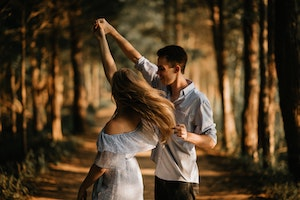

The Collegiate Shag (or "Shag") is a partner dance done primarily to uptempo swing and pre-swing jazz music (185-250+ beats per minute). It belongs to the swing family of American vernacular dances that arose in the 1920s and 30s. It is believed that the dance originated within the African American community of the Carolinas in the 1920s, later spreading across the United States during the 1930s.
Because the basic step takes up such a small space, the Shag can also be danced to fast music (over 300 beats per minute). The shag is still danced today by swing dance enthusiasts worldwide.
The Steps
In the 1930s "shag" became a blanket term that signified a rather large family of jitterbug dances (swing dances) that all shared certain characteristics. The most notable of these characteristics are (1) a pulse that's consistently held up high on the balls of the feet (a.k.a. a "bounce" or "hop" to match every beat in the music) and (2) footwork with kicks that reach full extension on the off-beat (even beats) rather than the on-beats (odd beats) as with most other dances that were popular at the time. Dance instructors from the swing era often grouped the different shags into three rhythmic categories: single rhythm, double rhythm, and triple rhythm shag. The different names are intended to denote the number of 'slow' steps (e.g., a step, hop combination) performed during each basic. The slow steps were then followed by two 'quick' steps (e.g., a step, step combination).
Today, shag enthusiasts and swing dance historians also recognize an additional shag rhythm that has come to be known as "long double-shag". This rhythmic variation is identical to double-shag except that it has four quick steps rather than two. It has been traced to Charlotte, NC, at least as far back as 1936, where it co-existed with the triple and single-rhythm variations. It is commonly believed that double-rhythm shag evolved somewhat later than the others, originating in either New York or New Jersey in the mid-1930s. And, though double-shag is the most popular form of collegiate shag today, single-rhythm shag is believed to have been the dominant rhythmic pattern during the swing era. 
Name
"Shag" itself (when used in reference to American social dances) is a very broad term used to denote a number dances that originated in the first half of the 20th century. Today, the term "collegiate shag" is often used interchangeably with "shag" to refer to a particular style of dance (i.e., the dance covered in this article) that was popular amongst American youth during the swing era of the 1930s and 40s. To call the dance "collegiate shag" was not as common during the swing era as it is today, but when the "collegiate" portion was tacked on (as it was with other vernacular dances of the time) it was meant to indicate the style of the dance that was popular amongst the college crowd.
The identification of a particular variant as 'collegiate' probably had its roots in a trend that sprang up in the mid-1920s, where collegiate variations of popular dances began to emerge. These included dances like the collegiate Charleston, collegiate rumba, collegiate one-step, collegiate fox trot, etc. These forms employed hops, leaps, kicks, stamps, stomps, break-away movements, and shuffling steps. The name "collegiate shag" became somewhat standard in the latter part of the 20th century (see swing revival), presumably because it helped to distinguish the dance from other American vernacular dances that share the "shag" designation. Carolina shag, which evolved from a dance called the Little Apple, and St. Louis shag, which is believed to have been an outgrowth of the Charleston, both adopted the name shag—though neither one of them is directly related to the shag that's the focus of this article.
History
Unfortunately, shag's origins are not very clear. Descriptions of the dance in literature from the time period suggest it began in the South as a 'street dance', meaning it did not initially evolve as part of the curriculum taught by a dance master or in a dance studio. Nevertheless, a particular version of the shag was eventually adopted by the Arthur Murray studios where it was standardized in the late 1930s.
Publications from the era testify to shag's popularity throughout the country during the 1930s. They also clue us into the fact that, despite its enormous popularity, the dance itself wasn't universally known by the name "shag", which only makes tracing its origins more difficult. Arthur Murray's book Let's Dance reports that shag was known throughout the United States under various names, like "flea hop". And by the late-1930s there were arguably a hundred or more stylistic variations of the dance.
In the 1935 book entitled Textbook of Social Dancing, Lucielle and Agnes Marsh tell us that, "At the most exclusive Charleston Colonial Ball we found the debutantes and cadets doing what they call the Shag. This is a daring little hop and kick with sudden lunges and shuffling turns. As we followed our survey through the South we found the same little, quick hop, skip, and jump under the names of Fenarly Hop and Florida Hop. Through the West the same steps could be traced under the names of [the] Collegiate, Balboa, and Dime Jig." And a New York writer sent to Oklahoma in late 1940 noted an "...Oklahoma version of shag done to the western swing music of Bob Wills and his Texas Playboys at the Cain's Dancing Academy in Tulsa."